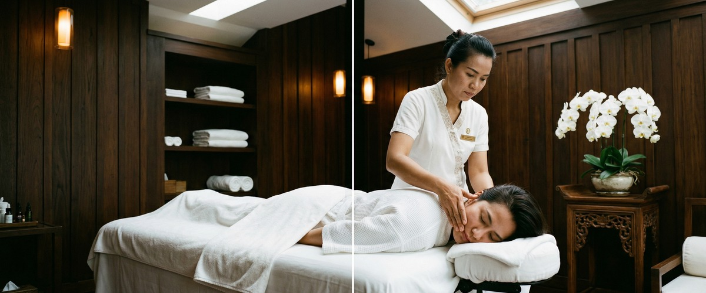
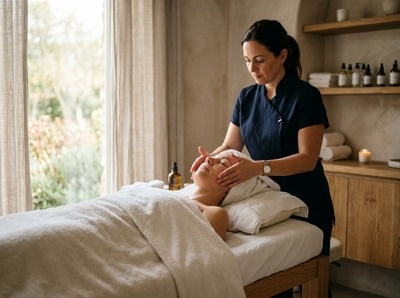
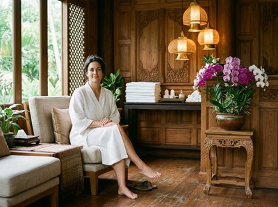

Your skin is unlike anyone else's, and it deserves a treatment that reflects that.

A tailored facial treatment in Glasgow at Serendipity Massage Therapy & Wellness is built entirely around your complexion: your concerns, your skin type, and what your skin actually needs right now.
A tailored facial is a results-focused skin treatment. It starts with a full consultation before any product is applied. Rather than following a fixed set of steps, your therapist checks your skin's current condition and chooses techniques and products to match.
Whether you're dealing with congestion, sensitivity, dullness, or dehydration, the treatment adapts to your goals.

The session typically includes deep cleansing, targeted exfoliation, and a nourishing mask. Each element is chosen for your skin type.
Facial massage is woven throughout, boosting circulation, lymphatic drainage, and product absorption.
This treatment suits anyone whose skin has needs a standard facial won't meet. It works well for those dealing with persistent congestion, uneven tone, or dry patches that shift with the seasons.
It's a strong choice for first-timers who want a proper start to professional skin care. It also works for regulars who know their skin needs more than a fixed menu can offer.
Your session starts with a skin consultation. This is a short chat about your lifestyle, your current routine, and what you want to achieve.
Sessions run for 60 minutes. You'll be comfortable on a treatment bed while your therapist works through each stage.

Afterwards, your skin will feel clean, calm, and refreshed. Some clients see an immediate lift in tone and brightness.
Your therapist will talk you through homecare advice at the end of the session. You can book your tailored facial online to get started.
At Serendipity Massage Therapy & Wellness, every treatment is delivered by a trained therapist. Each one works to the consistent standard developed by head therapist Jariya Malone.
Our Glasgow city centre studio on Hope Street is calm and unhurried. Your skin gets the full attention it needs. Book a session and experience the difference a genuinely personal facial makes.
Before the treatment begins, your therapist will ask about your skin type, any sensitivities or concerns, your current skincare routine, and what you'd most like to address. This takes around five minutes and shapes every product and technique choice that follows. It's a conversation, not a form — and it makes the difference between a good facial and one that actually works for your skin.
A full tailored facial at Serendipity runs for around 60 minutes, including the consultation. This allows enough time to work through each stage properly. If you're unsure which session length suits you, our team is happy to advise when you call on 0141 673 6630.
Yes. Because the treatment is built around your skin, sensitive types are well catered for. Your therapist will choose products suited to calming reactivity and avoiding known irritants. If you have a skin condition such as rosacea or eczema, let us know at the time of booking so we can prepare.
Most clients leave with skin that feels clean, hydrated, and calmer. A healthy glow is common, and some clients see an immediate lift in tone and texture. Your therapist will give you brief homecare advice at the end of the session to help you hold onto the results.
For most skin types, every four to six weeks fits well with the skin's natural renewal cycle. Regular sessions let your therapist track changes and adjust the treatment as needed. If you have a specific concern to address more intensively, your therapist can suggest a schedule to suit.
A standard facial follows a set sequence of steps regardless of who's on the treatment bed. A tailored facial starts with a consultation and builds the treatment around your skin's current condition and goals.
The products, techniques, and timing are all chosen for you. That's why the results tend to be more noticeable and longer lasting. If you'd like to explore other treatments alongside your facial, Serendipity also offers aromatherapy massage and hot stone massage for a more complete wellbeing experience.